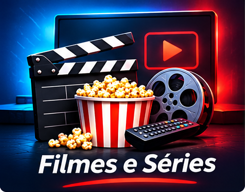
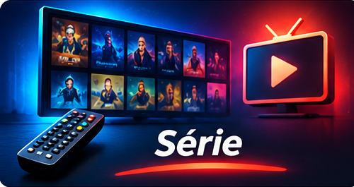
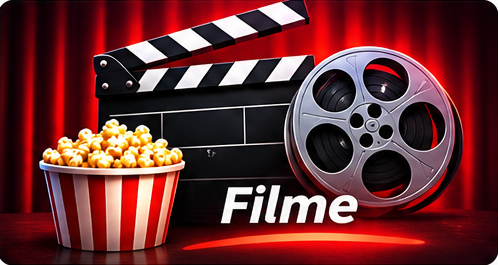
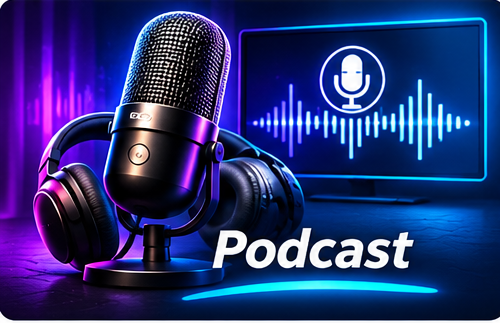
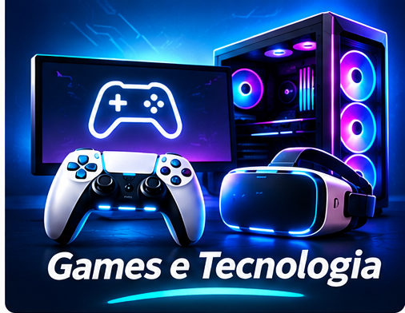

Um espaço para descobrir novidades sobre filmes, música, games e tecnologia.

Gosto de acompanhar filmes de ação, aventura e ficção científica. Essas produções apresentam histórias criativas e diferentes universos.

As séries permitem acompanhar personagens e histórias por vários episódios, sendo uma opção de lazer.

O cinema também é uma forma de conhecer novas ideias e culturas.
A música faz parte do dia a dia, ajuda a relaxar e acompanha diferentes atividades.

Os podcasts são programas em áudio que abordam tecnologia, notícias, entrevistas e entretenimento.
As plataformas digitais facilitam o acesso a músicas e conteúdos em áudio.

A inovação transforma a maneira como jogamos e nos conectamos.
Os games oferecem diversão, desafios e experiências que podem estimular o raciocínio e a criatividade.
A tecnologia está presente nos jogos, computadores, celulares e em várias ferramentas do cotidiano.
Atividade de Desenvolvimento de Sistemas
Aluno: Alexandre Ferraz